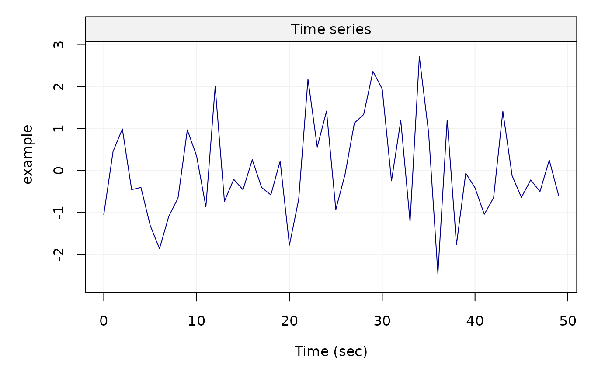
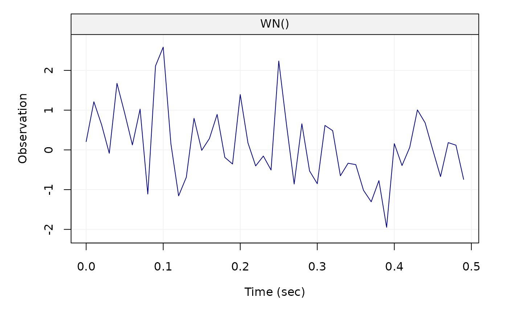

Setups a time series oriented object that works well with graphing and summary utilities
gts(data, start = 0, end = NULL, freq = 1, unit_ts = NULL,
unit_time = NULL, name_ts = NULL, name_time = NULL, data_name = NULL)
Arguments
| data |
A one-column matrix, data.frame, or a numeric vector. |
| start |
A numeric that provides the time of the first observation. |
| end |
A numeric that provides the time of the last observation. |
| freq |
A numeric that provides the rate of samples. Default value is 1. |
| unit_ts |
A string that contains the unit expression of the time series. Default value is NULL. |
| unit_time |
A string that contains the unit expression of the time. Default value is NULL. |
| name_ts |
A string that provides an identifier for the time series data. Default value is NULL. |
| name_time |
A string that provides an identifier for the time. Default value is NULL. |
| data_name |
A string that contains the name of data. |
Value
A gts object
Examples
m = data.frame(rnorm(50))
x = gts(m, unit_time = 'sec', name_ts = 'example')
plot(x)

